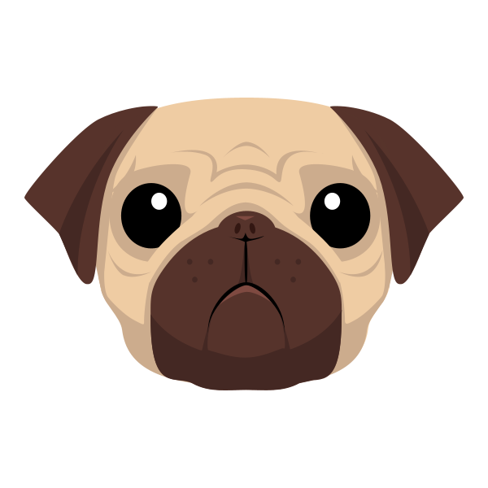

Обо мне


Дополнительно
Навыки:
- Адаптивная верстка под любой размер экрана
- Понимание валидной верстки
- Навыки использования JavaScript/jQuery
- Использование и настройка разнообразных JS/JQ плагинов
- Использование, добавление и удаление плагинов Gulp
- Использование Git
- Умение и опыт использования препроцессоров SASS, SCSS, Jade/PUG
Самостоятельно написанная игра крестики-нолики на JS
ToDo List с запоминанием введённых данных в localStorage
Технологии которые я использую в работе

HTML5
Именно он создает каркас вашего сайта или приложения, а пятая версия позволит мне создавать более SEO-оптимизированную структуру вашего продукта

CSS3
Этот язык стилей позволяет мне создавать абсолютно любой внешний вид вашего сайта или приложения. Все ограничивается только вашей фантазией!

JavaScript
Этот язык программирования позволяет оживить все что угодно: слайдеры, окна, подсказки, вкладки, получение данных от сервера и многое другое

jQuery
С помощью библиотеки jQuery можно делать наиболее использованные действия с сайтом, например - взаимодействие с модальными окнами, меню, табами, кнопками и так далее, но в более кратком виде, в отличии от JavaScript
Инструменты которые помогают мне в создании сайтов
Методология БЭМ
При написании сайта я придерживаюсь методологии БЭМ, что позволяет проще и быстрее в будующем работать с кодом сайта, и в том случае если через некоторое время приходиться возвращаться к коду сайта, понятнее вносить корректировки в проект

Gulp
Сборщик Gulp автоматизирует многие процессы во время написания сайта, например в автоматическом режиме сохраняет код в минифицированом виде, что ускоряет загрузку сайта, а так же оптимизирует картинки которые используються на сайте, и многое другое

Git
С помощью Git я сохраняю контрольные точки во время вёрстки, что позволяет вернуться к определённой точке, работать в команде, либо просто сохранять проект с новыми корректировками или нововведениями

Figma
При вёрстке сайта никуда без подготовленного макета, который переноситься в код из удобной для этого программы, в моём случае это - Figma

SASS
Для оптимизации и ускорения работы с CSS кодом

Jade / Pug
Для более краткой и быстрой записи HTML кода

Различные плагины
Учитывая то что сайты бывают максимально разнообразные, и бывают разные задачи для которых уже существуют отличные решения, такие как например - слайдеры, работа с анимацией, модальные окна для увеличения картинок на сайте и т.п.
И именно для таких задач я использую плагины
Анимация - AOS, GSAP, Luttie
Слайдеры - Swipper, Slick
И именно для таких задач я использую плагины
Анимация - AOS, GSAP, Luttie
Слайдеры - Swipper, Slick
Примеры моих работ